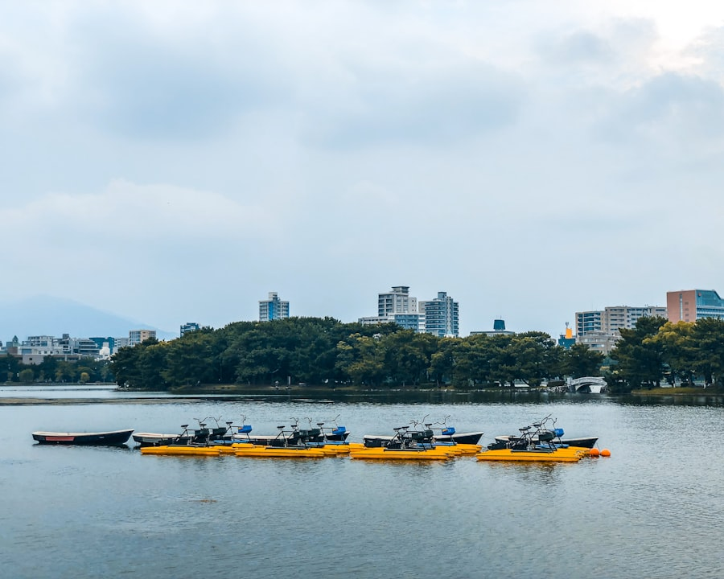

규슈 · 후쿠오카
규슈 (후쿠오카 · 벳푸 · 다자이후 · 우레시노)
후쿠오카를 거점으로 한 시내·온천·근교 당일치기 정보.
이 지역 스팟 둘러보기
소지역과 카테고리를 선택하면 실제로 가볼 만한 곳/먹을 곳이 바로 아래에 나옵니다.
🗺️ 우레시노
-
소안 요코초(宗庵 よこ長)
1959년 개업, 우레시노 온천두부(유도후) 전문점. 100% 우레시노산 콩만 사용.
-
시볼트 족탕
상가 중심부 족탕 광장의 무료 족욕탕.
-
도요타마히메 신사(유노모토신사)
아름다운 피부의 여신을 모신 신사, 우레시노의 파워스팟.
🗺️ 후쿠오카 시내
-
오호리 공원
옛 후쿠오카성 해자를 활용한 대형 호수 공원. 일본 정원, 오리배, 스타벅스 매장 있음. 여름 불꽃놀이 명소.
-
캐널시티 하카타
중앙에 운하가 흐르는 대형 복합 쇼핑몰.
-
마이즈루 공원(후쿠오카성터)
옛 후쿠오카성 혼마루 터를 중심으로 한 공원. 니노마루우메엔에서 1월 하순~2월 중순 매화 개화.
-
후쿠오카 타워
후쿠오카 최고층 건축물, 야경 명소 전망대.
-
텐진
규슈 최대 번화가, 쇼핑·맛집 밀집 지역.
🗺️ 벳푸
-
우미지옥(海地獄)
벳푸 지옥순례 중 가장 규모가 크고 대표적인 온천. 황산철 성분으로 물빛이 푸름, 온도 98℃. 국가 지정 명승.
-
치노이케지옥(血池地獄)
산화철 성분으로 붉은 색을 띠는 온천. 1300년 이상 역사, 일본에서 가장 오래된 지옥으로도 여겨짐.
벳푸역 앞에서 정기관광버스로 우미지옥·치노이케지옥을 포함한 지옥순례 7개소를 순회할 수 있습니다. 나머지 5개 지옥은 개별 명칭이 확인되는 대로 추가할 예정입니다.
🍽️ 다자이후
-
마츠야(松屋)
다자이후 텐만구 참배길, 역에서 나와 가장 먼저 보이는 우메가에모찌(매화 모양 팥떡) 가게. 유리 너머로 만드는 모습을 볼 수 있음, 줄서는 인기점.
-
야스타케(やす竹)
참배길의 우메가에모찌 판매점.
🍽️ 나카스(후쿠오카 시내)
-
나가하마 야마짱 나카스점(長浜やまちゃん)
1986년 포장마차로 시작한 라멘 명가. 돈코츠 라멘 전문.
-
타케짱(タケちゃん)
나카스 카와바타역 도보 5분, 여성도 편하게 갈 수 있는 분위기. 쿠시야키·돈코츠 라멘 취급.
-
히데짱 라멘
나카스의 오래된 라멘 노점. 하카타 라멘(돈코츠, 얇은 면) 전문.
-
쿠로짱
미야자키 출신 주인이 운영, 숯불구이 지역산 닭고기 전문 야타이.
조건에 맞는 스팟이 아직 없습니다. 다른 필터를 선택해 보세요.